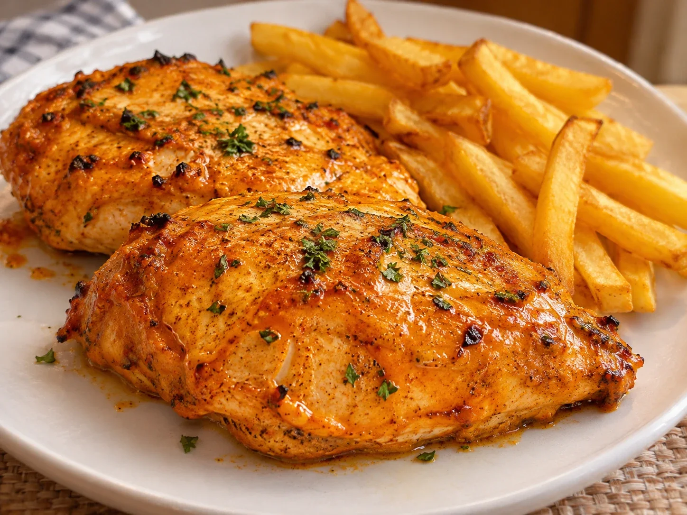

Sencillo. Casero. Bueno.
Recetas probadas en casa, para lo que puede comer cada uno.
La carta
Recetas
Hay recetas de ejemplo mientras llegan las de casa
Filtros
Cargando recetas
Ninguna receta cumple todo eso
Quita algún filtro y vuelve a mirar.
Juegos
Con los ingredientes de estas recetas, en 3D.